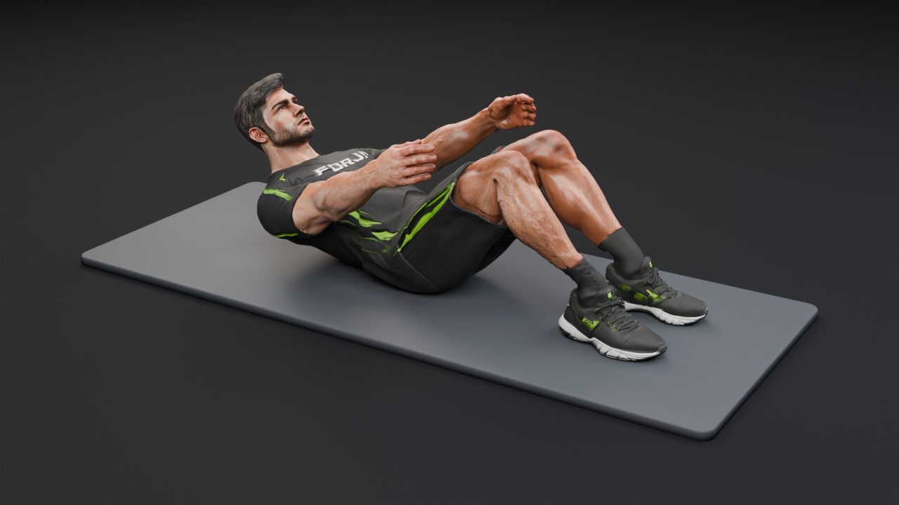
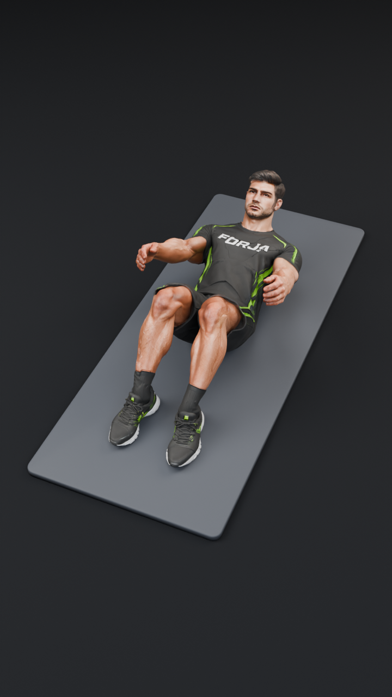
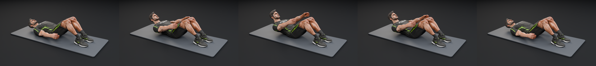
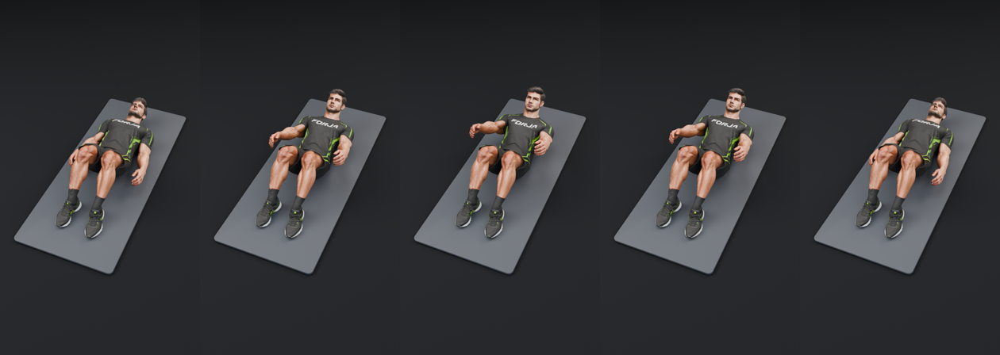

Horizontal (16:9)
1280 × 720 · 30 FPS · Câmera horizontal dedicada · Loop contínuo

▶ Toque para reproduzir (16:9)
0,00 s / 6,00 s
Velocidade
Inspeção visual dos dois formatos independentes renderizados com Blender Cycles. Para preservar memória no Android, apenas um vídeo é carregado por vez e os recursos são liberados ao sair da tela.
1280 × 720 · 30 FPS · Câmera horizontal dedicada · Loop contínuo

▶ Toque para reproduzir (16:9)720 × 1280 · 30 FPS · Câmera vertical independente · Loop contínuo

▶ Toque para reproduzir (9:16)Use as velocidades 0,5× e 0,25× ou arraste a barra de progresso para inspecionar cada aspecto nos dois formatos (marcações apenas locais nesta sessão):
Horizontal (16:9) — Quadros q0001 · q0023 · q0046 · q0068 · q0090

Vertical (9:16) — Quadros q0001 · q0023 · q0046 · q0068 · q0090
